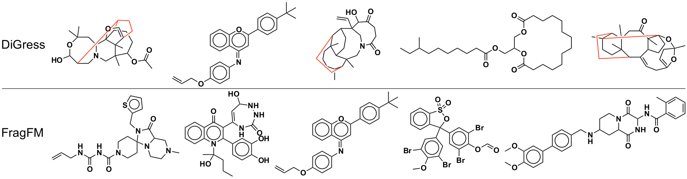

FragFM: Hierarchical Framework for Efficient Molecule Generation via Fragment-Level Discrete Flow Matching

Abstract
We introduce FragFM, a novel hierarchical framework via fragment-level discrete flow matching for efficient molecular graph generation. FragFM generates molecules at the fragment level, leveraging a coarse-to-fine autoencoder to reconstruct details at the atom level. Together with a stochastic fragment bag strategy to effectively handle a large fragment space, our framework enables more efficient, scalable molecular generation. We demonstrate that our fragment-based approach achieves better property control than the atom-based method and additional flexibility through conditioning the fragment bag. We also propose a Natural Product Generation benchmark (NPGen) to evaluate the ability of modern molecular graph generative models to generate natural product-like molecules. Since natural products are biologically prevalidated and differ from typical drug-like molecules, our benchmark provides a more challenging yet meaningful evaluation relevant to drug discovery. We conduct a comparative study of FragFM against various models on diverse molecular generation benchmarks, including NPGen, demonstrating superior performance. The results highlight the potential of fragment-based generative modeling for large-scale, property-aware molecular design, paving the way for more efficient exploration of chemical space.
Contributions
Atom-based
- Chemically implausible
- Poor scaling
- Low controllability
Fragment-based
- Limited fragment library
- Poor scaling
- Hard to recover whole graph
FragFM
oursThe first fragment-level graph flow matching that explores meaningful chemical space at scale.
NPGen: A Natural Product Benchmark
658,566 natural products from COCONUT, average 35.0 heavy atoms (vs. 21.7 MOSES, 27.9 GuacaMol). Evaluation adds NP-likeness and NP-Classifier divergences that reflect biological functionality rather than saturated distributional overlap.


Generation Quality on NPGen
FragFM beats atom-based DiGress and DeFoG on NP-likeness and NP-Classifier metrics while keeping validity and novelty high — and samples ~5× faster than DiGress.

Generated Sample Gallery
Random valid molecules generated by FragFM across three benchmarks — from drug-like small molecules on MOSES and GuacaMol to large, structurally complex natural products on NPGen.


Property-Controlled Generation
Two guidance knobs: classifier guidance λX on the flow, and fragment-bag reweighting λ𝓑. On the hard JAK2 docking-score task (top 0.08% of ZINC250k), bag guidance alone reaches the target while DiGress collapses in validity.


Sampling Efficiency
Denoising at the fragment level — not over individual atoms — keeps validity above 95% and FCD below 1.0 even under aggressive step reduction, with ~5× faster wall-clock time than DiGress on NPGen.


Synthesizability & Fragment-Bag Flexibility
AIZynthFinder retrosynthesis on 25k MOSES samples: FragFM reaches 77% solved, close to the MOSES test set (80%). Swapping the fragment bag to fragments drawn from solved (synthesizable) molecules — no retraining — pushes it to 85%, exceeding the dataset itself.
| AIZynthFinder | Solved ↑ | 1 step | 2 steps | 3 steps | 4+ steps |
|---|---|---|---|---|---|
| MOSES (test set) | 80.1 | 53.9 | 16.0 | 5.17 | 5.0 |
| FragFM | 77.0 | 46.3 | 18.7 | 6.2 | 5.8 |
| FragFM · solved bag | 85.0 | 52.3 | 20.7 | 6.6 | 5.4 |